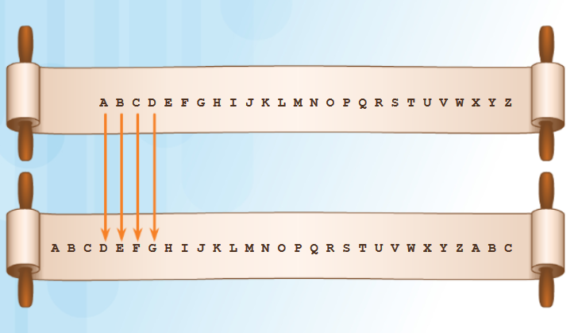
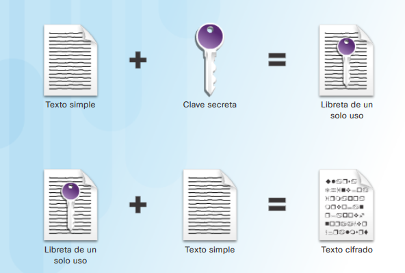
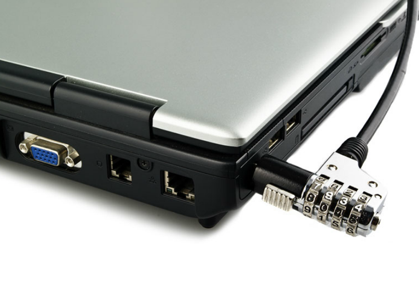

¿Qué es la criptografía?
La criptología es la ciencia de generar y descifrar códigos secretos. La criptografía es un método para almacenar y transmitir datos de modo que el receptor destinado pueda leerlos o procesarlos. La criptografía moderna utiliza algoritmos seguros a nivel informático para asegurarse de que
los delincuentes cibernéticos no puedan poner en peligro fácilmente la información protegida.
La confidencialidad de los datos garantiza la privacidad de modo que solo el receptor previsto pueda leer el mensaje. Las partes logran esto mediante la encriptación. La encriptación es el proceso de codificar datos de modo que una parte no autorizada no puede leerlos fácilmente.
Al activar la encriptación, los datos legibles son textos simples o textos sin cifrar, mientras que la versión cifrada es texto encriptado o texto cifrado. La encriptación convierte el mensaje legible de texto simple en texto cifrado, que es el mensaje ilegible, oculto. El descifrado
invierte el proceso. La encriptación también requiere una clave, que desempeña un rol importante en la encriptación y desencriptación de un mensaje. Las personas que poseen la clave pueden descifrar el texto cifrado a texto simple.
Históricamente, las partes han utilizado diversos algoritmos y métodos de encriptación. Un algoritmo es el proceso o la fórmula utilizada para resolver un problema. Se dice que Julio César aseguraba los mensajes al poner dos conjuntos de alfabeto, uno al lado del otro, y luego cambiaba
uno de ellos con un número específico de lugares. El número de lugares en el cambio sirve como la clave. Se convirtió el texto no cifrado en texto cifrado usando esta clave, y solo sus generales, que también tenían la clave, sabían cómo descifrar los mensajes.
Este método se conoce como el cifrado César. La figura muestra un mensaje secreto mediante el cifrado de César.
La historia de la criptografía.
La historia de la criptografía comenzó en los círculos diplomáticos hace miles de años. Los mensajeros de la corte del rey llevaban mensajes cifrados a otras cortes. Ocasionalmente, otras cortes no involucradas en la comunicación, intentaban robar los mensajes enviados a un reino que consideraban un adversario.
Poco después, los comandantes militares comenzaron a utilizar la encriptación para asegurar los mensajes.
Durante siglos, varios métodos de cifrado, dispositivos físicos y otros recursos de ayuda cifraban y descifraban el texto:
-
Scytale.
-
Cifrado César.

-
Cifrado de Vigenère.

-
Máquina Enigma.
Todos los métodos de cifrado utilizan una clave para cifrar o descifrar un mensaje. La clave es un componente importante en el algoritmo de encriptación. Un algoritmo de encriptación es tan bueno como la clave utilizada. Cuanto más complejidad presente, más seguro será el algoritmo.
La administración de claves es una parte importante del proceso.
Creación del texo cifrado.
Cada método de encriptación utiliza un algoritmo específico, llamado código, para cifrar y descifrar los mensajes. Un código consta de una serie de pasos bien definidos utilizados para encriptar y descifrar los mensajes. Existen varios métodos para crear un texto cifrado:
-
Transposición: las letras se cambian.
-
Sustitución: las letras se reemplazan.
-
Libreta de un solo uso: Texto no cifrado combinado con una clave secreta que crea un nuevo caracter, que luego, se combina con el texto simple para producir el texto cifrado.

Los viejos algoritmos de encriptación, como el cifrado César o la máquina Enigma, dependían del secreto del algoritmo para alcanzar la confidencialidad. Con la tecnología moderna, donde a menudo la ingeniería inversa es simple, las partes utilizan los algoritmos de dominio público.
Con la mayoría de los algoritmos modernos, el descifrado correcto requiere el conocimiento de las claves criptográficas adecuadas. Esto significa que la seguridad de la encriptación reside en la privacidad de las claves, no del algoritmo.
Algunos algoritmos de encriptación modernos siguen utilizando la transposición como parte del algoritmo.
La administración de claves es la parte más difícil del diseño de un sistema criptográfico. Muchos sistemas criptográficos han fallado por errores en la administración de claves y todos los algoritmos criptográficos modernos requieren procedimientos de administración de claves.
En la práctica, la mayoría de los ataques en sistemas criptográficos implican el ataque del sistema de administración de claves, en lugar del algoritmo criptográfico en sí mismo.
Actividad: Exploración del cifrado de Vigenère.

Dos tipos de encriptación.
La encriptación criptográfica puede proporcionar confidencialidad al incorporar diversas herramientas y protocolos.
Existen dos enfoques para garantizar la seguridad de los datos al utilizar la encriptación. La primera es proteger el algoritmo. Si la seguridad de un sistema de encriptación depende del secreto del algoritmo, el aspecto más importante es proteger al algoritmo a toda costa.
Cada vez que alguien descubre los detalles del algoritmo, cada parte involucrada debe cambiar el algoritmo. Este enfoque no suena muy seguro o razonable. El segundo enfoque es proteger las claves. Con la criptografía moderna, suelen usarse algoritmos públicos.
Las claves criptográficas garantizan la privacidad de los datos. Las claves criptográficas son contraseñas que forman parte de la información en un algoritmo de encriptación en conjunto con datos que requieren encriptación.
Existen dos clases de algoritmos de encriptación:
-
Algoritmos simétricos. Estos algoritmos utilizan la misma clave precompartida, a veces llamada un par de clave secreta, para cifrar y descifrar datos. El emisor y el receptor conocen la clave precompartida antes de que comience cualquier comunicación cifrada.
Como se muestra en la figura, los algoritmos simétricos usan la misma clave para cifrar y descifrar texto no cifrado. Los algoritmos de encriptación que utilizan una clave común son más simples y necesitan menos capacidad informática.
-
Algoritmos asimétricos Los algoritmos de encriptación asimétrica usan una clave para cifrar los datos y una clave diferente para descifrarlos. Una clave es pública y la otra es privada. En un sistema de cifrado de clave pública,
cualquier persona puede cifrar un mensaje con la clave pública del receptor, y el receptor es el único que puede descifrarlo mediante su clave privada. Las partes intercambian mensajes seguros sin necesidad de utilizar una clave precompartida,
como se muestra en la figura siguiente. Los algoritmos asimétricos son más complejos. Estos algoritmos requieren muchos recursos y son más lentos para ejecutar.
Proceso de encriptación simétrica
Los algoritmos simétricos utilizan la misma clave precompartida para cifrar y descifrar datos, un método también conocido como encriptación de clave privada.
Por ejemplo, Alice y Bob viven en diferentes ubicaciones y desean intercambiar mensajes secretos entre sí a través del sistema de correo. Alice desea enviar un mensaje secreto a Bob.
El cifrado de clave privada utiliza un algoritmo simétrico. Como se ilustra por las claves en la figura, Alice y Bob tienen claves idénticas para un único candado. El intercambio de claves sucedió antes de enviar un mensaje privado.
Alice escribe un mensaje privado y lo coloca en una caja pequeña que cierra con el candado. Le envía la caja a Bob. El mensaje está seguro dentro de la caja mientras esta se abre camino a través del sistema de oficina postal. Cuando
Bob recibe la caja, usa la clave para abrir el candado y recuperar el mensaje. Bob puede utilizar la misma caja y el mismo candado para enviar una respuesta secreta a Alice.
Si Bob desea hablar con Carol, necesita una nueva clave precompartida para que esa comunicación sea secreta para Alice. Con cuantas más personas Bob desee comunicarse de manera segura, más claves deberá manejar.

Tipos de criptografía.
Los tipos más comunes de criptografía son cifrados por bloques y cifrados pde flujo. Cada método se diferencia en la forma de agrupar bits de datos para cifrarlo.
-
Cifrado por bloques.
Los cifrados por bloques transforman un bloque de texto simple, de longitud fija en un bloque común de texto cifrado de 64 o 128 bits. El tamaño del bloque es la cantidad de datos cifrados en cualquier momento.
Para descifrar este texto cifrado, aplique la transformación inversa al bloque de texto cifrado, utilizando la misma clave secreta.
Los cifrados por bloques producen generalmente los datos de salida que son mayores que los datos de entrada, porque el texto cifrado debe ser un múltiplo del tamaño del bloque.
Por ejemplo, el Estándar de cifrado de datos (DES) es un algoritmo simétrico que cifra los bloques en fragmentos de 64 bits mediante una clave de 56 bits. Para lograr esto, el algoritmo de bloque toma un fragmento de datos
por vez, por ejemplo, 8 bytes por fragmento, hasta que todo el bloque está completo. Si hay menos datos de entrada que uno bloque completo, el algoritmo agrega datos artificiales o espacios en blanco,
hasta que utiliza los 64 bits completos, como se muestra en la figura para los 64 bits de la izquierda.

-
Cifrado por flujo.
A diferencia de los cifrados por bloque, los cifrados de flujo cifran el texto simple un byte o un bit por vez, como se muestra en la figura siguiente. Piense en los cifrados de flujo como el cifrado de bloques con el tamaño de bloque de un bit.
Con un cifrado de flujo, la transformación de estas unidades más pequeñas de texto simple varía, según cuándo se las encuentra durante el proceso de encriptación. Los cifrados de flujo pueden ser mucho más rápidos que los cifrados en bloque,
y no aumentan generalmente el tamaño del mensaje, ya que pueden cifrar un número arbitrario de bits.
El A5 es un cifrado de flujo que proporciona privacidad de voz y cifra las comunicaciones de telefonía celular. También es posible utilizar el DES en el modo de cifrado de flujo.
Los sistemas criptográficos complejos pueden combinar el bloque y el flujo en el mismo proceso.
Algoritmos de encriptación simétrica.
Los numerosos sistemas de encriptación usan la encriptación simétrica. Algunos de los estándares de encriptación comunes que usan la encriptación simétrica incluyen los siguientes:
3DES (DES triple): el Estándar de encriptación digital (DES) es un cifrado de bloques simétrico con un tamaño de bloque de 64 bits que utiliza una clave de 56 bits. Se necesita un bloque de texto simple de 64 bits de entrada y genera un bloque de 64 bits de texto cifrado.
Opera siempre en bloques de igual tamaño y utiliza las permutaciones y las sustituciones en el algoritmo. Una permutación es una manera de organizar todos los elementos de un conjunto.
El DES triple cifra los datos tres veces y utiliza una clave diferente para al menos una de las tres veces, proporcionando un tamaño de clave acumulativo de 112 a 168 bits. El 3DES es resistente a ataques, pero es más lento que DES.
El ciclo de encriptación 3DES es el siguiente:
Datos cifrados por el primer DES
Datos descifrados por el segundo DES
Datos vueltos a cifrar por el tercer DES.
El proceso inverso descifra el texto cifrado.
IDEA: el Algoritmo internacional de cifrado de datos (IDEA) utiliza bloques de 64 bits y claves de 128 bits. IDEA realiza ocho rondas de las transformaciones en cada uno de los 16 bloques que se producen al dividir cada bloque de 64 bits.
IDEA fue el reemplazo de DES y ahora la PGP (Pretty Good Privacy) la utiliza. El PGP es un programa que proporciona privacidad y autenticación para la comunicación de datos. La protección de privacidad GNU (GPG) es una versión de PGP gratuita y con licencia.
AES: el Estándar de encriptación avanzada (AES) tiene un tamaño de bloque fijo de 128 bits con un tamaño de clave de 128, 192 o 256 bits. El Instituto Nacional de Normas y Tecnología (NIST) aprobó el algoritmo AES en diciembre de 2001.
El gobierno de los EEUU utiliza el AES para proteger la información clasificada.
El AES es un algoritmo sólido que utiliza claves de mayor longitud. El AES es más rápido que DES y 3DES, lo que brinda una solución para las aplicaciones de software así como también el uso de hardware en los firewalls y los routers.
Otros cifrados por bloque incluyen Skipjack (desarrollados por la National Security Agency - NSA), Blowfish y Twofish.
Actividad. Uso de la encriptación simétrica.
El proceso de encriptación asimétrica
La encriptación asimétrica, también denominada cifrado de clave pública, utiliza una clave para la encriptación que es diferente de la clave utilizada para el descifrado. Un delincuente no puede calcular la clave de descifrado según
el conocimiento de la clave de cifrado, y viceversa, en una cantidad de tiempo razonable.
Si Alice y Bob intercambian un mensaje secreto mediante la encriptación de clave pública, utilizan un algoritmo asimétrico. Esta vez, Bob y Alice no intercambian claves antes de enviar los mensajes secretos.
En cambio, Bob y Alice poseen un candado separado con las claves correspondientes separadas. Para que Alice envíe un mensaje privado de Bob, primero debía ponerse en contacto con él y solicitarle que le envíe su candado abierto.
Bob envía el candado pero mantiene la clave. Cuando Alice recibe el candado, escribe su mensaje secreto y lo coloca en una caja pequeña. También coloca su candado abierto en la caja pero mantiene la clave. Luego cierra la caja con el candado de Bob.
Cuando Alice cierra la caja, ya no puede ingresar ya que no tiene una clave para ese candado. Le envía la caja a Bob y, como esta viaja a través del sistema de correo, nadie puede abrirlo. Cuando Bob recibe la caja, puede usar su clave para abrir la
caja y recuperar el mensaje de Alice. Para enviar una respuesta segura, Bob pone su mensaje secreto en la caja, junto con su candado abierto y cierra la caja con el candado de Alice. Bob envía por correo la caja asegurada a Alice.
Por ejemplo, en la figura 1, Alice solicita y obtiene la clave pública de Bob. En la figura 2, Alice utiliza la clave pública de Bob para cifrar un mensaje con un algoritmo acordado. Alice envía el mensaje cifrado a Bob y este luego usa su clave privada
para descifrar el mensaje, como se muestra en la figura 3.

Figura 1.

Figura 2.

Figura 3.
Algoritmo de encriptación asimétrica
Los algoritmos asimétricos utilizan fórmulas que cualquier persona puede buscar. El par de claves no relacionadas es lo que hace que estos algoritmos sean seguros. Los algoritmos asimétricos incluyen los siguientes:
RSA (Rivest-Shamir-Adleman): utiliza el producto de dos números primos muy grandes con una longitud igual de entre 100 y 200 dígitos. Los navegadores utilizan RSA para establecer una conexión segura.
Diffie-Hellman: proporciona un método de intercambio electrónico para compartir la clave secreta. Los protocolos seguros, como Secure Sockets Layer (SSL), Transport Layer Security (TLS), Shell seguro (SSH) y Protocolo de seguridad de Internet (IPsec), utilizan Diffie-Hellman.
ElGamal: utiliza el estándar del gobierno de EE. UU. para las firmas digitales. Este algoritmo es gratuito ya que nadie posee la patente.
Criptografía de curva elíptica (ECC): usa curvas elípticas como parte del algoritmo. En EE. UU., la Agencia de Seguridad Nacional utiliza la ECC para la generación de firma digital y el intercambio de claves.
Actividad. Uso de la encriptación asimétrica


Administración de claves
La administración de claves incluye generación, intercambio, almacenamiento, uso y reemplazo de claves utilizadas en un algoritmo de encriptación.
La administración de claves es la parte más difícil del diseño de un sistema criptográfico. Muchos sistemas criptográficos han fallado por errores en los procedimientos de administración de claves. En la práctica, la mayoría de los ataques a los sistemas criptográficos
se realizan en el nivel de administración de claves, en lugar del algoritmo criptográfico en sí mismo.
Como se muestra en la figura, existen varias características esenciales de administración de claves que deben considerarse.
Dos términos usados para describir las claves son:
-
Longitud de las claves.
También denominado tamaño de la clave, es la medida en bits.
-
Espacio de clave.
Es la cantidad de intentos que una longitud de clave específica puede generar.
A medida que aumenta la longitud de la clave, el espacio aumenta de manera exponencial. El espacio de clave de un algoritmo es el conjunto de todos los valores posibles de la clave. Las claves más larfas son más seguras, sin embargo, también requieren más recursos.
Casi todos los algoritmos tienen algunas claves débiles en su espacio de clave que permiten a un delincuente descifrar las claves a través de un acceso directo.
Comparación de los tipos de encriptación.
Es importante comprender las diferencias entre los métodos de encriptación simétricos y asimétricos. Los sistemas de encriptación simétrica son más eficientes y pueden manejar más datos. Sin embargo, la administración de claves con sistemas de encriptación
simétrica es más problemática y más difícil de manejar. La criptografía asimétrica es más eficiente en la protección de la confidencialidad de pequeñas cantidades de datos y su tamaño y velocidad permiten que sea más segura para tareas como el intercambio
de claves electrónicas que es una pequeña cantidad de datos en lugar de cifrar grandes bloques de datos.
Mantener la confidencialidad es importante para los datos almacenados y los datos en movimiento. En ambos casos, la encriptación simétrica resulta favorecida debido a su velocidad y la simplicidad del algoritmo. Algunos algoritmos asimétricos pueden aumentar
considerablemente el tamaño del objeto cifrado. Por lo tanto, en el caso de los datos en movimiento, use la criptografía de clave pública para intercambiar la clave secreta y luego la criptografía simétrica para garantizar la confidencialidad de los datos enviados.

Aplicaciones
Existen numerosas aplicaciones para los algoritmos simétricos y asimétricos.
El token de generación de contraseñas de única vez es un dispositivo de hardware que utiliza la criptografía para generar una contraseña única. Una contraseña de única vez es una cadena de caracteres numérica o alfanumérica generada automáticamente que autentica
al usuario para una transacción de solo una sesión. El número cambia cada 30 segundos aproximadamente. La contraseña de la sesión aparece en una pantalla y el usuario introduce la contraseña.
La industria de pago electrónico utiliza 3DES. Los sistemas operativos utilizan DES para proteger los archivos de usuarios y los datos del sistema con contraseñas. La mayoría de los sistemas de archivos de cifrado, como NTFS, utilizan AES.
Cuatro protocolos utilizan algoritmos de clave asimétrica:
-
Intercambio de claves por Internet (IKE), que es un componente fundamental de las redes privadas virtuales (VPN) de IPsec.
-
Secure Sockets Layer (SSL), un medio para implementar la criptografía en un navegador web.
-
Shell seguro (SSH), un protocolo que proporciona una conexión de acceso remoto segura a un dispositivo de red.
-
Pretty Good Privacy (PGP), un programa informático que proporciona privacidad y autenticación criptográfica para mejorar la seguridad de las comunicaciones por correo electrónico.
Una VPN es una red privada que utiliza una red pública, generalmente Internet, para crear un canal de comunicación seguro. Una VPN conecta dos terminales como dos oficinas remotas mediante Internet para crear la conexión.
Las VPN utilizan IPsec. IPsec es un conjunto de protocolos desarrollado para lograr servicios seguros en las redes. Los servicios de IPSec permiten la autenticación, la integridad, el control de acceso y la confidencialidad.
Con IPsec, los sitios remotos pueden intercambiar información cifrada y verificada.
Los datos en uso son una preocupación cada vez mayor para muchas organizaciones. Cuando se encuentran en uso, los datos ya no tienen cualquier protección porque el usuario necesita abrir y cambiar los datos.
La memoria del sistema contiene los datos en uso y puede contener los datos confidenciales como la clave de cifrado.
Si los delincuentes comprometen los datos en uso, tendrán acceso a los datos almacenados y a los datos en movimiento.
Actividad. Identificar la encriptación simétrica y asimétrica.

Controles de acceso físico
Son obstáculos reales implementados para evitar el contacto directo con los sistemas. El objetivo es evitar que los usuarios no autorizados tengan acceso físico a las instalaciones, el equipo y otros activos de la organización.
El control de acceso físico determina quién puede ingresar (o salir) y dónde y cuándo puede hacerlo.
Los ejemplos de controles de acceso físico incluyen los siguientes:
Las protecciones (Figura 1) supervisan las instalaciones
Las cercas (Figura 2) protegen el perímetro
Los detectores de movimiento (Figura 3) detectan objetos móviles
Los bloqueos de las PC portátiles (Figura 4) protegen los equipos portátiles
Las puertas bloqueadas (Figura 5) evitan el acceso no autorizado
Las tarjetas de deslizamiento (Figura 6) permiten el acceso a las áreas restringidas
Los perros guardianes (Figura 7) protegen las instalaciones
Las videocámaras (Figura 8) supervisan las instalaciones al recopilar y registrar las imágenes
Las trampas (Figura 9) permiten el acceso al área segura después de que la puerta 1 se cierra
Las alarmas (Figura 10) detectan intrusiones
 Candados de seguridad.

Tarjetas de acceso.

Perro guardian.

Video cámaras.
Control de acceso lógico.
Los controles de acceso lógico son soluciones de hardware y software que se utilizan para administrar el acceso a recursos y sistemas. Estas soluciones basadas en tecnología incluyen las herramientas y los protocolos
que los sistemas informáticos utilizan para la identificación, autenticación, autorización y responsabilidad.
Los controles de acceso lógico incluyen los siguientes:
- La encriptación es el proceso de tomar el texto simple y crear el texto cifrado.
- Las tarjetas inteligentes tienn un microchip integrado.
- Las contrasesñas constan de una cedena de caracteres protegida.
- La biométrica consta de las características físicas de los usuarios.
- Las listas de control de acceso (ACL) definen el tipo de tráfico permitido en una red.
- Los protocolos son un conjunto de reglas que rigen el intercambio de datos entre dispositivos.
- Los firewalls evitan el tráfico de red no deseado.
- Los routers conectan al menos dos redes.
- Los sistemas de detección de intrusiones supervisan una red para detectar actividades sospechosas.
- Los niveles de recorte son determinados umbrales permitidos para detectar errores antes de activar un indicador rojo.
Controles de acceso administrativo.
Los controles de acceso administrativo son las políticas y los procedimientos que definen las organizaciones para implementar y hacer cumplir todos los aspectos del control de acceso no autorizado.
Los controles admiistrativos se enfocan en las prácticas de personal y las prácticas empresariales.
Los controles admiistrativos incluyen los siguientes:
- Las políticas son declaraciones de intenciones.
- Los procedimientos son los pasos detallados necesarios para realizar una actividad.
- Las prácticas de contratación comprende los pasos que una organización sigue para encontrar empleados cualificados.
- Las comprobaciones de antecedentes son una evaluación del empleo que incluye la información de la última verificación de empleo, historial de crédito y antecedentes penales.
- La clasificación de datos califica los datos según su sensibilidad.
- La capacitación de seguridad capacita a los empleados sobre las políticas de seguridad en una organización.
- Las revisiones evalúan el rendimiento laboral de un empleado.
Control de acceso obligatorio.
El control de acceso obligatorio (MAC) restringe las acciones que un sujeto puede realizar en un objeto. Un sujeto puede ser un usuario o un proceso. Un objeto puede ser un archivo, un puerto o un dispositivo de entrada/salida.
Una regla de autorización se aplica si un sujeto puede acceder al objeto o no.
Las organizaciones utilizan el MAC donde se encuentran diferentes niveles de clasificaciones de seguridad. Cada objeto tiene una etiqueta y cada sujeto tiene una espacio libre. Un sistema MAC restringe a un sujeto según la
clasificación de seguridad del objeto y la etiqueta anexada al usuario.
Por ejemplo, tome las clasificaciones de seguridad militar denominadas "secreto" y "máxima confidencialidad". Si un archivo (un objeto) se considera de máxima confidencialidad, es un archivo que se clasifica (etiqueta) como "máxima confidencialidad".
Las únicas personas (sujetos) que pueden ver el archivo (objeto) son aquellas con un permiso de "maxima confidencialidad". El mecanismo de control de acceso debe garantizar que una persona (sujeto) con permiso "Secreto" solamente,
nunca obtenga acceso a un archivo catalogado como "de máxima confidencialidad". De manera similar, un usuario (sujeto) con permiso de acceso "de máxima confidencialidad" no puede cambiar la clasificación de un archivo (objeto)
catalogado como "de máxima confidencialidas" a "secreto". Además, un usuario con permiso de "máxima confidencialidad" no puede enviar un archivo de máxima confidencialidad a un usuario que solo tiene permiso para ver información secreta.
Control de acceso discrecional
El propietario de un objeto determina si permite el acceso a un objeto con control de acceso discrecional (DAC). DAC otorga o restringe el acceso de objeto determinado por el propietario del objeto. Como su nombre lo indica,
los controles son discrecionales porque el propietario de un objeto con ciertos permisos de acceso pueden transferir esos permisos a otro sujeto.
En sistemas que emplean controles de acceso discrecionales, el propietario de un objeto puede decidir qué sujetos pueden acceder al objeto y qué acceso específico pueden tener. Un método común para lograr esto es con permisos,
como se muestra en la figura. El propietario de un archivo puede especificar qué permisos (lectura/escritura/ejecución) pueden tener otros usuarios.
Las listas de control de acceso son otros mecanismos comunes utilizados para implementar el control de acceso discrecional. Un lista de control de acceso utiliza reglas para determinar qué tráfico puede ingresar o salir de una red.

Control de acceso basado en roles.
El control de acceso basado en roles (RBAC) depende del rol del sujeto. Los roles son las funciones de trabajo en una organización. Los roles específicos requieren permisos para realizar determinadas operaciones. Los usuarios adquieren permisos a través de su función.
El RBAC puede trabajar junto con DAC o MAC al hacer cumplir las políticas de cualquiera de ellos. El RBAC ayuda a implementar la administración de seguridad en grandes organizaciones con cientos de usuarios y miles de permisos posibles.
Las organizaciones aceptan ampliamente el uso de RBAC para administrar permisos en un sistema o una aplicación, como una mejor práctica.
Control de acceso basado en reglas.
El control de acceso basado en reglas utiliza listas de control de acceso (ACL) para ayudar a determinar si otorga acceso o no. Una serie de reglas se incluye en la ACL, como se muestra en la figura.
Establecer si se debe otorgar acceso depende de estas reglas. Un ejemplo de esa regla es una que indica que ningún empleado puede acceder al archivo de nómina después de horario o los fines de semana.
Como ocurre con el MAC, los usuarios no pueden cambiar las reglas de acceso. Las organizaciones pueden combinar el control de acceso basado en reglas con otras estrategias para implementar las restricciones de acceso.
Por ejemplo, los métodos de MAC pueden utilizar un enfoque basado en reglas para la implementación.
Actividad. Indetificar las estrategias de control de acceso.

¿Qué es la identificación?
La identificación aplica las reglas establecidas por la política de autorización: Un sujeto solicita acceso a un recurso del sistema. Cada vez que el sujeto solicita acceso a un recurso, los controles de acceso determinan si otorgar o denegar el acceso.
Por ejemplo, la política de autorización determina qué actividades puede realizar un usuario en un recurso.
Un identificador único garantiza la asociación correcta entre las actividades permitidas y los sujetos. Un nombre de usuario es el método más común utilizado para identificar a un usuario.
Un nombre de usuario puede ser una combinación alfanumérica, un número de identificación personal (PIN), una tarjeta inteligente o método biométrico, por ejemplo una huella digital, el escaneo de retina o el reconocimiento de voz.
Un identificador único garantiza que un sistema pueda identificar a cada usuario de manera individual; por lo tanto, permite que un usuario autorizado realice las acciones adecuadas en un recurso particular.
Controles de identificación
Las políticas de ciberseguridad determinan qué controles de identidad deben utilizarse. La sensibilidad de la información y los sistemas de información determinan cuán rigurosos son los controles. El aumento de las violaciones de datos han forzado a
muchas organizaciones a fortalecer sus controles de identificación. Por ejemplo, la industria de la tarjeta de crédito en los Estados Unidos requiere que todos los proveedores convertir a los sistemas de identificación de la tarjeta inteligente.
Qué es lo que sabe - Método de autenticación.
Contraseñas o PIN son ejemplos de algo que un usuario conoce. Las contraseñas son el método más popular que se utiliza para la autenticación. Los términos, contraseña, clave de acceso o PIN se conocen de manera genérica como contraseña.
Una contraseña es una cadena de caracteres que se utiliza para autenticar la identidad de un usuario. Si esta cadena de caracteres se relaciona con un usuario ( como un nombre, una fecha de nacimiento o una dirección ), será más fácil para los delincuentes cibernéticos adivinar la contraseña del usuario.
Varias publicaciones recomiendan que la contraseña tenga al menos ocho caracteres. Los usuarios no deben crear una contraseña que sea tan larga y por lo tanto sea difícil de memorizar, o a la inversa, que sea tan corta y que por lo tanto sea fácil de descifrarla.
Las contraseñas deben contener una combinación de letras mayúsculas y minúsculas, números y caracteres especiales. Haga clic aquí para probar las contraseñas actuales.
Los usuarios necesitan utilizar contraseñas diferentes para los distintos sistemas porque si un delincuente decodifica la contraseña de usuario una vez, podrá acceder a todas las cuentas de un usuario. El administrador de contraseñas puede
ayudar a un usuario a crear y a recordar las contraseñas seguras. Haga clic aquí para ver un generador de contraseñas seguras.
Qué es lo que tienen
Las tarjetas inteligentes y los llaveros de seguridad son dos ejemplos de algo que los usuarios tienen en su poder.
Seguridad de tarjeta inteligente. Una tarjeta inteligente es una pequeña tarjeta de plástico, aproximadamente del tamaño de una tarjeta de crédito, con un pequeño chip incorporado en ella.
El chip es un portador de datos inteligente, capaz de procesar, almacenar, y de proteger los datos. Las tarjetas inteligentes almacenan información privada, como números de cuenta bancaria, identificación personal, historias clínicas y firmas digitales.
Las tarjetas inteligentes proporcionan autenticación y cifrado para mantener los datos a salvo.
Llaveros de seguridad. Un llavero de seguridad es un dispositivo que es lo suficientemente pequeño como para llevarlo en un llavero. Utiliza un proceso llamado autenticación de dos factores,
que es más seguro que una combinación de nombre de usuario y contraseña. Primero, el usuario ingresa un número de identificación personal (PIN). Si está ingresado correctamente, el llavero de seguridad mostrará un número.
Éste es el segundo factor que el usuario debe ingresar para iniciar sesión en el dispositivo o la red.
Quién es
Una característica física única, como una huella digital, una retina o una voz que identifica a un usuario específico se denomina biométrica. La seguridad biométrica compara características físicas con perfiles almacenados para autenticar usuarios. Un perfil es un archivo de datos que contiene características
conocidas de una persona. El sistema otorga acceso de usuario si sus características coinciden con las configuraciones guardadas. Un lector de huellas digitales es un dispositivo biométrico común.
Existen dos tipos de identificadores biométricos:
-
Características fisiológicas. Incluyen huellas digitales, ADN, características de rostro, manos, retina, oído...
-
Características de comportamiento. Incluye patrones de comportamiento como gestos de voz, ritmo de escrtura o la manera de caminar de un usuario.
Los datos biométricos son cada vez más popular en sistemas de seguridad pública, productos electrónicos de consumo y aplicaciones de punto de venta. La implementación de datos biométricos utiliza un dispositivo de escaneo o lectura, un software que convierte la información escaneada en formato digital y una base de datos
que almacena datos biométricos para su comparación.
Autenticación de varios factores
La autenticación de varios factores usa al menos dos métodos de verificación. Un llavero con clva de seguridad es un buen ejemplo. Los dos factores son algo que usted sabe, como una contraseña, y algo que posee, como un transmisor de seguridad. Avance un paso más al agregar algo que usted es,
por ejemplo el escaneo de huellas digitales.
La autenticación de varios factores pueden reducir la incidencia de robo de identidad en línea porque al conocer la contraseña no le daría acceso a los delincuentes cibernéticos a la información del usuario. Por ejemplo, un sitio web de banca en línea puede requerir una contraseña y un PIN que el usuario recibe
en su smartphone. Como se muestra en la figura, el retiro de efectivo de un ATM es otro ejemplo de autenticación de varios factores. El usuario debe tener la tarjeta de un banco y conocer el PIN antes de que el ATM dispense dinero.
Actividad. Identificar los métodos de autenticación

¿Qué es la autorización?
La autorización controla lo que el usuario puede hacer o no en la red después de una autenticación satisfactoria: Después de que un usuario prueba su identidad, el sistema verifica a qué recursos de red puede acceder el usuario y qué pueden hacer los usuarios con los recursos.
Como se muestra en la figura, la autorización responda la pregunta, "¿Qué privilegios de lectura, copia, creación y eliminación tiene el usuario?"
La autorización utiliza un conjunto de atributos que describe el acceso del usuario a la red. El sistema compara estos atributos a la información contenida en la base de datos de autenticación, determina un conjunto de restricciones para ese usuario y lo envía al router local donde el usuario está conectado.
La autorización es automática y no requiere que los usuarios tomen medidas adicionales después de la autenticación. Implemente la autorización inmediatamente después de que el usuario realice la autenticación.
Uso de la autorización
La definición de reglas de autorización es el primer paso para controlar el acceso. Una política de autorización establece estas reglas.
Una política de pertenencia a grupos define la autorización según la pertenencia a un grupo determinado. Por ejemplo, todos los empleados de una organización tienen una tarjeta de deslizamiento, que proporciona acceso a las instalaciones. Si el trabajo de un empleado no requiere que
este tenga acceso a la sala de servidores, la tarjeta de seguridad no le permitirá ingrese a esa sala.
Una política de autoridad define los permisos de acceso según la posición de un empleado dentro de la organización. Por ejemplo, solo los empleados de nivel senior en un departamento de TI pueden tener acceso a la sala de servidores.
¿Qué es la responsabilidad?
La responsabilidad rastrea una acción hasta una persona o un proceso y realiza el cambio a un sistema, recopila esta información e informa los datos de uso. La organización puede utilizar estos datos para fines como auditorías o facturación. Los datos recopilados pueden incluir el tiempo de inicio de sesión de un usuario,
si el inicio de sesión fue un éxito o una falla o los recursos de red a los que el usuario tenía acceso. Esto permite que una organización localice acciones y errores durante una auditoría o una investigación.
Implementacion de la responsabilidad
La implementación de responsabilidad consta de tecnologías, políticas procedimientos y formación. Los archivos de registro proporcionan información detallada según los parámetros seleccionados. Por ejemplo, una organización puede ver el registro de los inicios de sesión fallidos y correctos.
Las fallas de inicio de sesión pueden indicar que un delincuente intentó hackear una cuenta. Los inicios de sesión exitosos indican a una organización qué usuarios utilizan qué recursos y cuándo. ¿Es normal que un usuario autorizado tenga acceso a la red de la empresa a las 3:00 a.m.? Las políticas y los procedimientos de la organización
explican qué medidas deben registrarse y cómo se generan, se revisan y almacenan los archivos de registro.
La retención de datos, la eliminación de medios y los requisitos de cumplimiento proporcionan la responsabilidad. Muchas leyes requiere la implementación de medidas para proteger diferentes tipos de datos. Estas leyes guían a una organización de forma correcta para administrar, almacenar y desechar datos.
La educación y el conocimiento de las políticas, los procedimientos y las leyes relacionadas de una organización también pueden contribuir a la responsabilidad.
Controles preventivos
Prevenir significa evitar que algo suceda. Los controles de acceso preventivo evitan que ocurran actividades no deseadas o no autorizadas. Para un usuario autorizado, un control de acceso preventivo significa restricciones. La asignación de privilegios específicos a un usuario en un sistema es un ejemplo de control preventivo.
Aunque un usuario es un usuario autorizado, el sistema establece límites para evitar que el usuario tenga acceso y realice acciones no autorizadas. Un firewall que bloquea el acceso a un puerto o servicio que los delincuentes cibernéticos puedan atacar también se considera un tipo de control preventivo.
Controles disuasivos
Un obstáculo es lo opuesto a una recompensa. Una recompensa alienta a las personas a hacer lo correcto, mientras que un obstáculo las desalienta a hacer lo incorrecto. Los profesionales y las empresas de seguridad cibernética utilizan obstáculos para limitar o para mitigar una acción o un comportamiento,
pero los controles disuasivos no los dejan. Los obstáculos del control de acceso desalientan a los delincuentes cibernéticos a obtener acceso no autorizado a los sistemas de información o a datos confidenciales. Los obstáculos del control de acceso desalientan los ataques al sistema, el robo de datos o la propagación de códigos maliciosos.
Las organizaciones utilizan obstáculos de control de acceso para hacer cumplir las políticas de ciberseguridad.
Los obstáculos hacen que los delincuentes cibernéticos potenciales piensen dos veces antes de cometer un delito. La figura enumera los obstáculos comunes de control de acceso que se utilizan en el mundo de la ciberseguridad.
Controles de detección
La detección es el acto o proceso de advertir o descubrir algo Las detecciones de control de acceso identifican diferentes tipos de actividad no autorizada. Los sistemas de detección pueden ser muy simples, como un detector de movimiento o un guardia de seguridad. También pueden ser más complejos, como un sistema de detección de intrusiones.
Todos los sistemas de detección tienen muchas cosas en común; buscan la actividad inusual o prohibida. También proporcionan métodos para registrar o alertar a los operadores del sistema sobre un posible acceso no autorizado. Los controles de detección no impiden que algo suceda; más bien son medidas que se toman después de que se realiza el hecho.
Controles correctivos
Los controles correctivos contrarrestan algo que no es deseable. Las organizaciones establecen controles de acceso correctivos después de que un sistema experimenta una amenaza. Los controles correctivos restauran el sistema a un estado de confidencialidad, integridad y disponibilidad. También pueden restaurar los sistemas a la normalidad
luego de que se produzca una actividad no autorizada.
Controles de recuperación
La recuperación implica volver a un estado normal. Los controles de acceso de recuperación restauran recursos, funciones y capacidades después de una violación de la política de seguridad. Los controles de recuperación pueden reparar el daño, además de detener cualquier otro daño. Estos controles tienen capacidades más avanzadas sobre los controles de acceso correctivos.
Controles compensativos
Implican compensar algo. Los controles de acceso compensativos ofrecen opciones a otros controles para fomentar el cumplimiento en respaldo de la política de seguridad.
Un control compensativo también puede ser una sustitución utilizada en lugar del control que no es posible en determinadas circunstancias. Por ejemplo, una organización puede no tener un perro guardián, entonces implementa un detector de movimiento con un reflector y un sonido de ladridos.
Actividad. Identificar los tipos de controles de seguridad.

¿Qué es el enmascaramiento de datos?
El enmascaramiento de datos es una tecnología que protege los datos al reemplazar la información confidencial por una versión no confidencial. La versión no confidencial se parece a la información original. Esto significa que un proceso comercial puede usar los datos no confidenciales y no es necesario cambiar las aplicaciones de respaldo o las instalaciones de almacenamiento de datos.
En el caso de uso más común, el enmascaramiento limita la propagación de datos confidenciales dentro de los sistemas de TI al distribuir los conjuntos de datos sustitutos para la prueba y el análisis. La información puede estar enmascarada dinámicamente si el sistema o la aplicación determina que una solicitud de información confidencial del usuario es arriesgada.
Técnicas de enmascaramiento de datos
El enmascaramiento de datos puede reemplazar los datos confidenciales en los entornos no productivos para proteger la información subyacente.
Existen varias técnicas de enmascaramiento de datos que pueden garantizar que los datos sigan siendo importantes pero se cambien lo suficiente para protegerlos:
-
La sustitución reemplaza los datos por valores que parecen auténticos para aplicar el anonimato a los registros de datos.
-
El desplazamiento deriva un conjutno de sustitución de la misma columna de datos que un usuario desea enmascarar. Esta técnica funciona bien para la información financiera en una base de datos de prueba, por ejemplo.
-
La anulación aplica un valor a un campo específico, lo cual evita completamente la visibilidad de los datos.
¿Qué es ls esteganografía?
La esteganografía oculta datos (el mensaje) en otro archivo, como un archivo de texto gráfico, de audio u otro archivo de texto. La ventaja de la esteganografía con respecto a la criptografía es que el mensaje secreto no atrae ninguna atención especial. Nadie sabría nunca que una imagen contenía realmente un mensaje secreto al ver el archivo en formato electrónico o impreso.
Existen varios componentes involucrados en el ocultamiento de datos: Primero, existen los datos integrados, que es el mensaje secreto. El texto cubierto (imagen cubierta o audio cubierto) oculta los datos integrados y genera un estegotexto (o una estegoimagen o estegoaudio). Una estegoclave controla el proceso de ocultamiento.
Técnicas de esteganografía
El enfoque utilizado para integrar los datos en una imagen cubierta utiliza los bits menos significativos (LSB). Este método utiliza bits de cada píxel en la imagen. Un píxel es la unidad básica de color programable en una imagen de computadora. El color específico de un píxel es una combinación de tres colores: rojo, verde y azul (RGB). Tres bytes de datos especifican
el color de un píxel (un byte para cada color). Ocho bits conforman un byte. El sistema de colores de 24 bits utiliza los tres bytes. LSB utiliza un bit de cada uno de los componentes rojo, verde y azul. Cada píxel puede ahorrar 3 bits.
La figura muestra tres píxeles de una imagen de 24 bits. Una de las letras del mensaje secreto es la letra T y la inserción del caracter T solo cambia dos bits del color. El ojo humano no puede reconocer los cambios realizados a los bits menos significativos. El resultado es un carácter oculto.

En promedio, menos de la mitad de los bits de una imagen deberá cambiar para ocultar un mensaje secreto de manera eficaz.
Práctica de laboratorio: uso de la esteganografía
Práctica de laboratorio: uso de la esteganografía.
Esteganografía social
La esteganografía social oculta información a plena vista al crear un mensaje que algunos pueden leer de determinada manera para recibir el mensaje. Otras personas que lo ven de manera normal, no verán el mensaje. Los adolescente utilizan esta táctica en los medios sociales para comunicarse con sus amigos más cercanos mientras que otros, como sus padres,
desconocen el significado real del mensaje. Por ejemplo, la frase "vamos al cine" puede significar "vamos a la playa".
Las personas en los países que censuran los medios también utilizan la esteganografía social para mandar sus mensajes al deletrear las palabras de manera incorrecta a propósito o hacer referencias imprecisas. En efecto, se comunican con diferentes audiencias de manera simultánea.
Detección
El estegoanálisis es el descubrimiento de que existe información oculta. El objetivo del estegoanálisis es detectar información oculta.
Los patrones de la estegoimagen generan sospecha. Por ejemplo, un disco puede tener áreas sin utilizar que ocultan información. Las utilidades de análisis de disco pueden informar sobre la información oculta en clústeres sin utilizar de dispositivos de almacenamiento. Los filtros pueden capturar los paquetes de datos que contienen información oculta en los encabezados de paquete.
Ambos métodos usan las firmas de esteganografía.
Al comparar una imagen original con la estegoimagen, un analista puede recoger patrones repetitivos de manera visual.
Ofuscación
La ofuscación de datos es el uso y la práctica de las técnicas de esteganografía y enmascaramiento de los datos en el área de ciberseguridad y la profesión de inteligencia cibernética: La ofuscación es el arte de hacer que el mensaje sea confuso, ambiguo o más difícil comprender. Un sistema puede codificar mensajes deliberadamente para evitar el acceso no autorizado a la información confidencial.
Aplicaciones
La marca el agua de software protege al software del acceso o la modificación no autorizada. La marca de agua de software inserta un mensaje secreto en el programa como prueba de propiedad. El mensaje secreto es la marca de agua del software. Si alguien intenta eliminar la marca de agua, el resultado es un código no funcional.
La ofuscación de software traduce el software a una versión equivalente a la original, pero a una solución que es más difícil de analizar para los atacantes. Si se intenta revertir la ingeniería del software esto puede brindar resultados incomprensibles de un software que todavía funciona.
Packet Tracer: Configuración del modelo de transporte de VPN
PT: Configuración del modo de transporte de VPN. (pdf)
PT: Configuración del modo de transporte de VPN. (pka)
Packet Tracer: Configuración del modo de túneles VPN.
PT: Configuración del modo de túneles VPN. (pdf)
PT: Configuración del modo de túneles VPN. (pka)
Cap.4: El arte de proteger los secretos.
En este capítulo, se analizaron los principios de criptología utilizados para comunicaciones seguras. En el capítulo se explicaron los algoritmos de encriptación simétrica y asimétrica, se compararon los dos algoritmos y se proporcionaron ejemplos de su uso.
En el capítulo se explicó cómo el control de acceso evita el acceso no autorizado a un edificio, a una sala, a un sistema o a un archivo mediante la identificación, autenticación, autorización y responsabilidad. Además, en el capítulo también se describieron los diversos modelos de control de acceso y los tipos de control de acceso.
El capítulo concluyó con el análisis de las diversas maneras en que los usuarios enmascaran los datos. La ofuscación de datos y la esteganografía son dos técnicas utilizadas para lograr el enmascaramiento de datos.